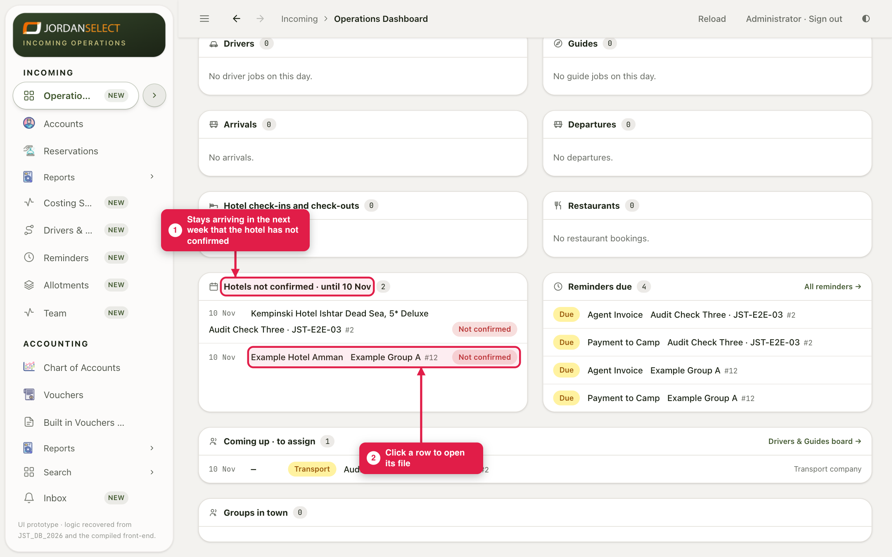
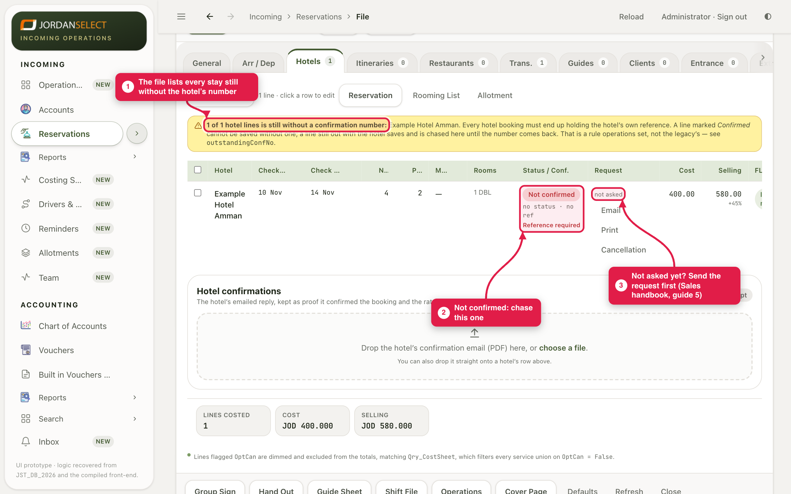
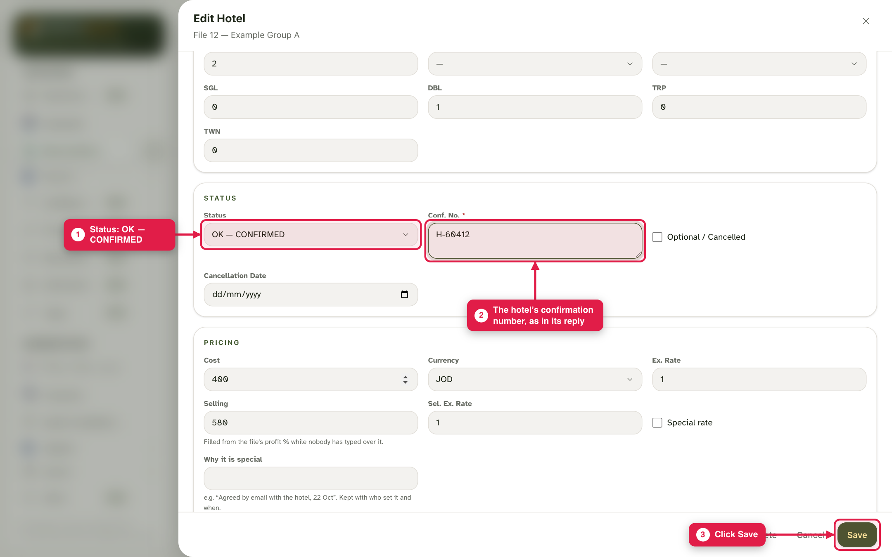
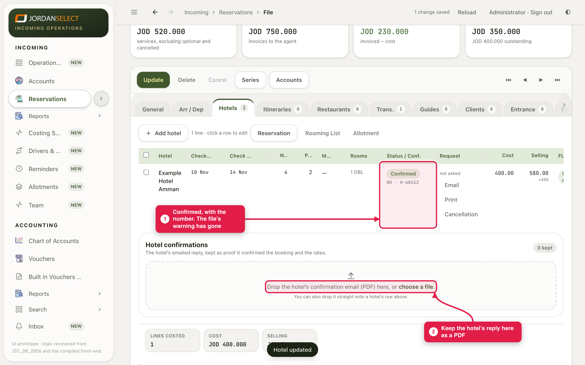

Every hotel stay must end up with the hotel’s own confirmation number. Find the ones still missing, and record the number when it comes.
WhoOperations (and Sales for their own files)
WhereThe dashboard, then the file’s Hotels tab
Takes1 minute per stay
You needThe hotel’s reply with its number
How it works
A stay waiting for the hotel is RQ. Once the hotel says yes, it becomes OK — CONFIRMED with the hotel’s number. The CRM refuses Confirmed without a number, and lists every stay still missing one.
Example in this guide: Example Group A (file 12) arrives on 10 November at Example Hotel Amman. On 3 November the hotel has not confirmed. It replies with number H-60412.
1. Find what is missing
1
On the Operations Dashboard, Hotels not confirmed lists every stay arriving in the next week that the hotel has not confirmed. Click a row to open its file.

Seen on 3 November: two stays arriving on the 10th, both not confirmed.
Further ahead?In Reservations, a file with a stay still missing a number shows “unconfirmed” or “no ref” in its Status column.
2
Go to the Hotels tab. The yellow note lists every stay still without the hotel’s number. Not confirmed on the row is the one to chase. If the request says not asked, send it first (Sales handbook, guide 5).

“Reference required”: the hotel has not given its number yet.
2. Record the hotel’s answer
3
Click the stay. Set Status to OK — CONFIRMED and type the hotel’s number in Conf. No., exactly as in its reply. Click Save.

Conf. No. is required once the status is Confirmed.
4
The stay shows Confirmed with the number, and the yellow note has gone. Drop the hotel’s e-mail, saved as a PDF, on the Hotel confirmations box to keep it with the booking.

The hotel’s e-mail is the proof of the rate it agreed.
The hotel says yes but gives no numberLeave the stay on RQ and ask again. Do not type a made-up number to clear the list: the number is what the hotel will look for when the group arrives.
3. Check your work
The stay is gone from Hotels not confirmed on the dashboard.
The file shows no “no ref” in Reservations.
The hotel’s reply is kept on the stay.
Questions? Ask the operations manager. · Last checked: ____ · Screens shown are from a test copy of the CRM with made-up data.